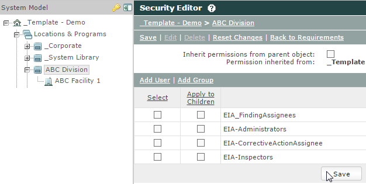
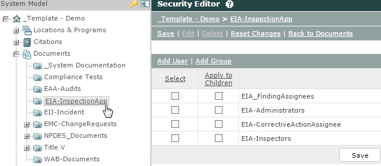
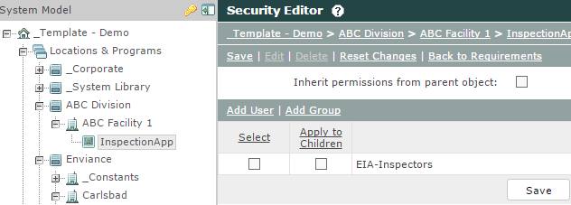
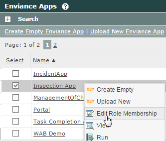
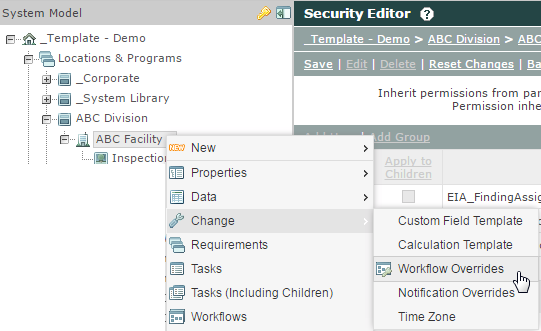
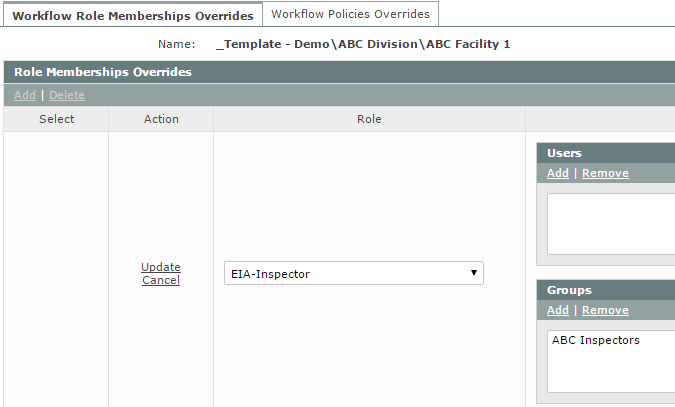

InspectionApp users include any of the following roles:
You can edit the users associated with these roles from the Management System. Users will need a combination of user permissions and workflow role associations to work in the InspectionApp.
All users of the InspectionApp need to have the following System Model permissions:
Report permission on the Facility AND the parent Division.

View/Edit permission on a top-level Documents folder named EIA-Inspections. This is where the configuration documents are stored as well as any documents uploaded from the InspectionApp.

Inspectors also need:
Create and Complete Tasks permission on the InspectionApp Unit in order to be able to create Inspections.

Form Designers will need to be added to App Role FormBuilder in App Manager.

Users will need to be associated with the workflow roles that allow them to either create and complete an inspection or complete a corrective action.
The users associated with these roles are shown in the list of potential Inspectors or Findings/Corrective Action assignees when an inspection is created or a finding or corrective action is assigned.
Associate users with the required roles using Workflow Overrides on the System Model.

It is recommended that associations are made by Groups, rather than individual users, but you may use both.

The workflow roles and the required membership are shown below.
| Workflow Role | Members |
|---|---|
| EIA-Inspector | Users must be associated with this role in order to complete an inspection. They will be shown in the list of potential Inspectors when a new inspection is initiated. |
| EIA-CorrectiveActionAssignee | Users must be associated with this role in order to be assigned to and complete a corrective action. They will be shown in the list of possible corrective action assignees when a corrective action is created. |
| EIA-FindingAssignee | Users must be associated with this role in order to be assigned to a Finding. They will be shown in the list of possible assignees when a finding is created. |
Default role members may be set up in the Workflow Types, if desired. The default role members will be used when there are no overrides configured for an object. Warning: Do not edit any information other than default role members in the Roles tab or the app may not function.
To edit the InspectionApp Users for each Facility:
Right click the facility and choose Change > Workflow Overrides.
The workflow roles and the names of the user groups and/or users associated with the workflow roles for this facility are shown. If no roles are shown, click Add, then select the role from the list and add the users or groups to associate with the role.
If the EIA-Inspectors, EIA-Corrective Action Assignees and EIA-FindingAssignees roles already have user or group associations, make note of the user group to which you need to add new users, or click Edit to add the users individually.
To add users to groups already associated with a role: